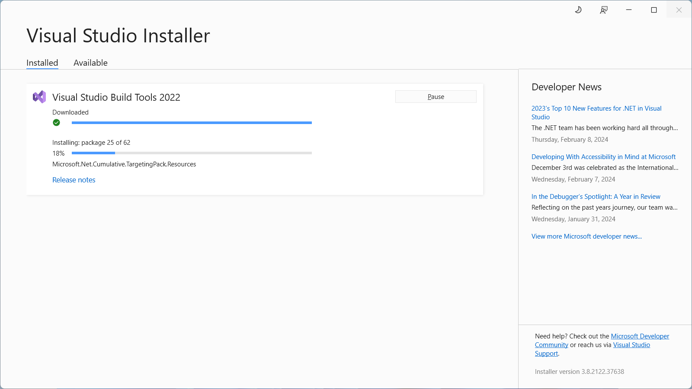

Stride не запускается
Предпосылки
Если у вас возникли проблемы с запуском Stride, убедитесь, что установлены все необходимые компоненты::
- .NET 8 SDK
- Visual C++ Redistributable 2019 (или более поздний)
- .NET Framework 4.7.2 (требуется для плагина Visual Studio)
- Visual Studio или Инструменты для сборки (необязательно, но рекомендуется)
Либо удалите Stride, перезапустите установщик Stride и установите необходимые компоненты при появлении соответствующего запроса.
.NET SDK 8.0
.NET SDK 8.0 должен был быть установлен установщиком обязательных компонентов Stride, если Visual Studio 2022 не сделал этого ранее.
Если по какой-то причине вам необходимо установить его вручную, вы можете воспользоваться этой ссылкой и выбать последнюю версию .NET 8 SDK для Windows.
Распространяемый пакет Visual C++ 2019 (или более поздняя версия)
Чтобы проверить, установлен ли он, перейдите в Панель управления > Программы > Программы и компоненты и найдите Microsoft Visual C++ 2015-2019 Redistributable.
Если он не установлен, вы можете скачать распространяемый пакет из Visual Studio Downloads (в разделе Другие инструменты, платформы и распространяемые пакеты). Обязательно установите обе версии x86 и x64..
Note
Если вместо этого вы видите 2015-2022 Redistributable, это нормально. С 2015 года они являются накопительными. Просто убедитесь, что последний год — это не менее 2019.
.NET Framework 4.7.2 (или более поздняя версия)
Чтобы проверить, установлен ли он, следуйте инструкциям на этой странице.
Если он не установлен, вы можете скачать его с сайтаMicrosoft Download Center.
Note
Если у вас установлен .NET 4.8, вам не нужно устанавливать .NET 4.7.2. Каждая версия 4.x является накопительной.
Visual Studio 2022 (по желанию)
Если у вас установлена Visual Studio 2022 (или более поздняя версия), вам необходимо установить следующие рабочие нагрузки и/или компоненты:
- .NET desktop development с включенным дополнительным компонентом Development tools for .NET.
Note
Более ранние версии могут работать с более старой версией Stride. Однако для Stride 4.2 и более поздних версий вам нужно иметь установленным только .NET 8 SDK.
Build Tools для Visual Studio 2022 (по желанию)
Если у вас не установлена Visual Studio и вы не хотите ее устанавливать, вы можете установить вместо этого Build Tools for Visual Studio. Вы можете скачать это здесь Visual Studio Downloads (в разделе Инструменты для Visual Studio).
Вам необходимо установить следующие рабочие нагрузки и/или компоненты:
- .NET desktop build tools с включенным дополнительным компонентом .NET SDK.
Note
Если вам не нужена Visual Studio, не волнуйтесь — она не устанавится. 